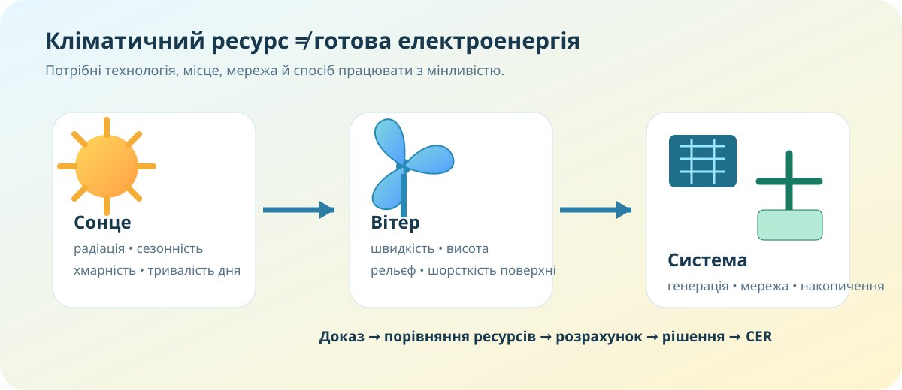

0. Інженерна дилема — 3 хв
Наприкінці Ви або підтримаєте гіпотезу доказами, або зміните її. Другий варіант у науці не гірший — просто докази виявилися переконливішими.
1. Спочатку карта, потім висновок — 7 хв


Відкрийте карту World Bank / Global Solar Atlas. Знайдіть PVOUT або GHI. Порівняйте північ і південь України. Запишіть не враження, а конкретну різницю кольору/значення.
У Global Wind Atlas оберіть висоту 100 м і шар Mean Wind Speed або Mean Power Density. Знайдіть два контрастні райони.
«На півдні сонячніше» ще не є рішенням для електростанції. Потрібні площа, мережа, доступність, обмеження землекористування, сезонність і профіль попиту.
Global Solar AtlasGlobal Wind Atlas — УкраїнаGreen Power Atlas — Україна
2. Дослідження з КТП: скільки коштує 1 кВт·год? — 8 хв
Зробимо спрощену оцінку. Вона не замінює фінансову модель: не враховує кредит, податки, деградацію панелей, заміну інвертора, дисконтовану вартість грошей і всі витрати на мережу. Але чудово показує, які величини керують результатом.
3. Кліматичний ресурс працює не лише в розетці — 4 хв
У КТП кліматичні ресурси пов’язані також із сезонністю землеробства, видами та вартістю продовольства. Температура, тривалість безморозного періоду, опади й сонячна радіація визначають, що можна виростити без теплиць, зрошення або великих витрат енергії.
4. Коротке відео — 3 хв
Подивіться короткий фрагмент про клімат і кліматичні ресурси України. Ваше завдання — знайти одну тезу, яку можна перевірити картою, а не просто записати визначення.
5. Тепер теорія — після того, як уже є докази — 4 хв
Кліматичні ресурси
Властивості клімату, які людина може використати: сонячна радіація, вітер, тепло, волога, тривалість вегетаційного й безморозного періодів.
Енергетичні ресурси
Для сонячної генерації важливі опромінення, хмарність і сезонність; для вітрової — швидкість вітру, її повторюваність, висота та рельєф.
Мінливість
Сонце й вітер не керуються диспетчером. Тому значення мають мережа, прогнозування, гнучкий попит, накопичення та поєднання різних джерел.
LCOE
Узагальнений показник вартості виробництва одиниці електроенергії за життєвий цикл. Він корисний для порівняння, але залежить від припущень і не дорівнює рахунку споживача.
6. CER: яку систему Ви захищаєте? — 3 хв
C — Claim: рішення. E — Evidence: мінімум два конкретні докази з карти/розрахунку. R — Reasoning: механізм, чому ці докази підтримують рішення.
Домашнє завдання
7. Тест — 10 балів
Джерела даних
Global Solar Atlas / World Bank (карти сонячного опромінення та PV-потенціалу України, набір оновлено 24.11.2025); Global Wind Atlas 4.0; IRENA «Renewable Power Generation Costs in 2025» (липень 2026); OpenStreetMap. Значення з атласів слід трактувати відповідно до вибраного шару, висоти та періоду.